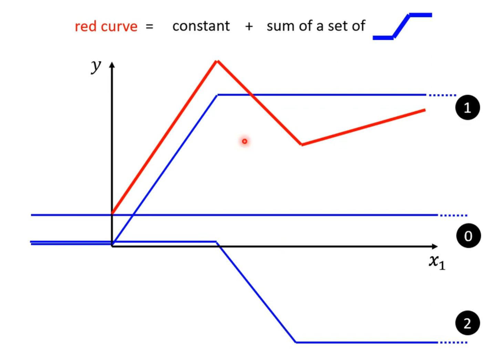
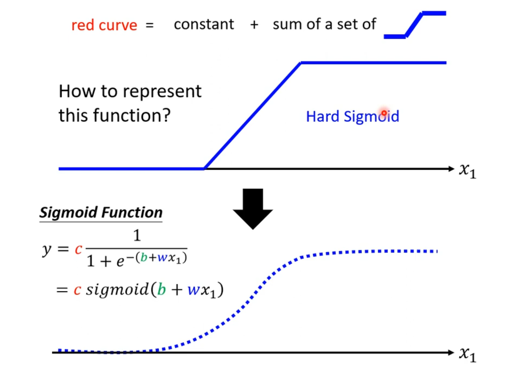
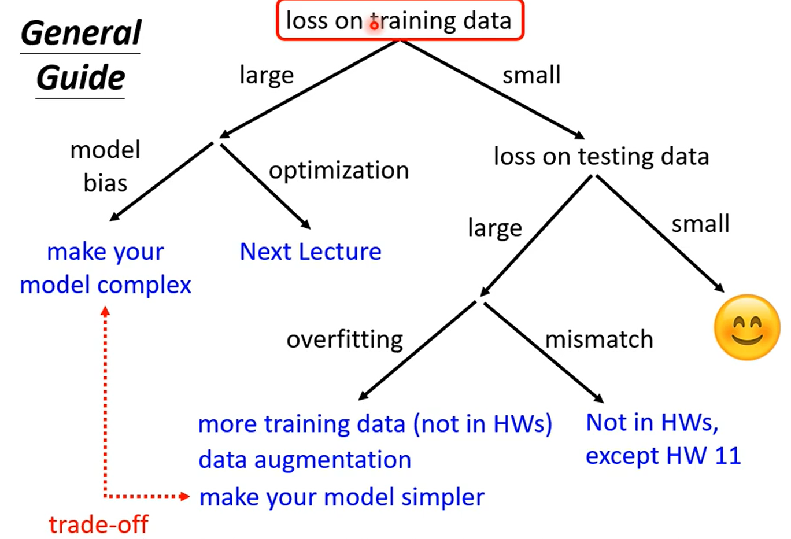
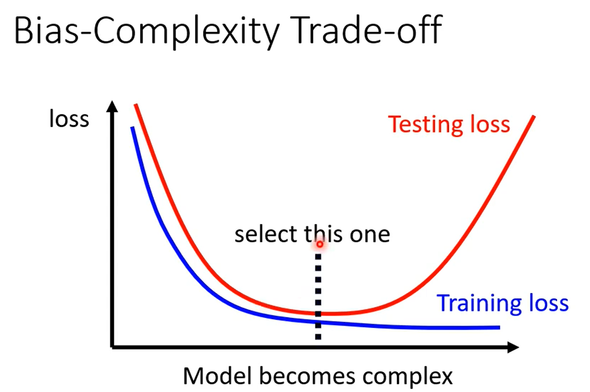

What is ML?
In short, ML is to Look for a function and to obtain an answer to a certain question, applied in speech recognition, image recognition.
Different types of ML
Regression: output a scalar.
Classification: given classes, output correct one. E.g. alpha go.
Structured learning：create something with a structure.
How to find a function?
Give a function with unknown paraments, called model. \[ y = b+wx_1 \] Symbol \(x_1\) is called feature.Symbol \(w\) and \(b\) represent weight and bias.
Define loss from Training Data. Loss is a function of parameters \(b\) and \(w\). It evaluates how good a set of values is. Paint error surface.
Optimization: Gradient Descent for example.
The process of finding a function is called training.
New model
Sometimes linear functions are inaccurate, so we need to use a new model to construct function with parameters. ### From linear model, to piecewise linear model. Use Sigmoid Function to approximately express Hard Sigmoid Function, and add multiple Sigmoid Function to express piecewise linear model.   Then we can express function as: \[ y = b + \sum_ic_i\ sigmoid(b_i+\sum_jw_{ij}x_j) \] We use vector \(\theta\) to express all the parameters in the function above, then the Loss function can be expressed as \(L(\theta)\). After that, we do the optimization to find the \(\theta^*\) satisfying \(\theta^*=arg\ {min}_{\theta}\ L\)
What is the general guide on ML?
A general guide
It can be described as the picture followed. 
Large training loss
Training loss is large. It may result from:
1. Model bias
It means that the model is too simple. Solution: redesign more features or deep learning
2. Optimization issue
How to know whether optimization causes a large training loss? Start from shallower networks (or other models), which are easier to optimize. If deeper networks do not obtain smaller loss on training data, then there is optimization issue.
Small training loss, but large testing loss.
Testing loss is large. It may result from: #### 1. Overfitting Overfitting occurs when loss is small on training data, but large on testing data. Solutions: a. more training data, or data augmentation; b. Constrained model: model has less flexibility.

Bias-complexity trade-off Cross validation: divide training set into training set and validation set. Use validation set to test the loss of the function obtained from training data set. How to split the training set? N-fold cross validation
2.Mismatch
Mismatch occurs when your training data and testing data have different distributions.Its difference from overfitting is that more training data can not obtain a better result.
How to find a function?
Give a function with unknown paraments, called model. \[ y = b+wx_1 \] Symbol \(x_1\) is called feature.Symbol \(w\) and \(b\) represent weight and bias.
Define loss from Training Data. Loss is a function of parameters \(b\) and \(w\). It evaluates how good a set of values is. Paint error surface.
Optimization: Gradient Descent for example.
The process of finding a function is called training.
New model
Sometimes linear functions are inaccurate, so we need to use a new model to construct function with parameters. ### From linear model, to piecewise linear model. Use Sigmoid Function to approximately express Hard Sigmoid Function, and add multiple Sigmoid Function to express piecewise linear model.
Then we can express function as: \[ y = b + \sum_ic_i\ sigmoid(b_i+\sum_jw_{ij}x_j) \] We use vector \(\theta\) to express all the parameters in the function above, then the Loss function can be expressed as \(L(\theta)\). After that, we do the optimization to find the \(\theta^*\) satisfying \(\theta^*=arg\ {min}_{\theta}\ L\)